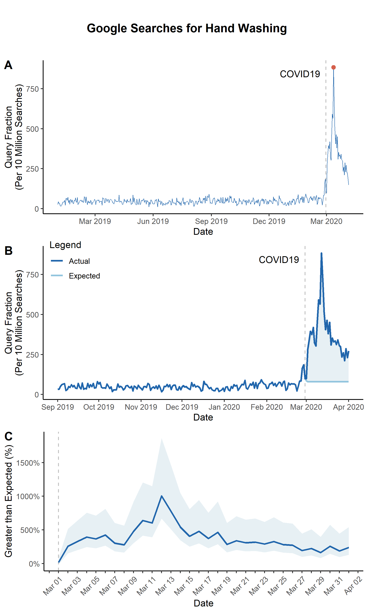

ARIMA Spike with One Geography
First, use run_arima to create a dataset in the correct format for other functions.
run_arima
US_df <- run_arima(
df = read.csv("./input/handwashing_day.csv", header = T, stringsAsFactor = F), # Data from gtrends
interrupt = "2020-03-01", # Interruption point in your data
geo = "US", # geography you want to use
kalman = T # If True, uses Kalman method to impute time series
)
Now, you're ready to produce a few interesting figures. The first figure is a simple line plot.
line_plot
panA <- line_plot(
US_df, # data from run_arima
geo = 'US', # geography you wnat to use
## Create a vertical "interruption" line in your plot
interrupt = "2020-03-01", # Date of an interruption
linelabel = "COVID19",
## Plot arguments
beginplot = T, # Start date for the plot. If T, beginning of data
endplot = T, # End date for the plot. If T, end of data
title = NULL, # If NULL, no Title
xlab = "Date", # x axis label
lbreak = "3 year", # Space between x-axis tick marks
xfmt = date_format("%Y"), # Format of dates on x axis
ylab = "Query Fraction (Per 10 Million Searches)", # y axis label
lwd = 0.3, # Width of the line
## Set a colorscheme
colorscheme = "blue", # Color schemes set in this package "red", 'blue" or "jamaim"
# ... customize any color using these
hicol = NA, # Searches line color
opcol = NA, # Color of point on top of spike
## Saving arguments
save = T, # If T, save plot
outfn = './output/panA.png', # Location to save plot
width = 6, # Width in inches
height = 3 # Height in inches
)
You can also produce a plot that highlights the difference between the ARIMA-expected and actual search volumes.
arima_plot
panB <- arima_plot(
US_df, ## data from run_arima
## Create a vertical "interruption" line in your plot
interrupt = "2020-03-01", # Date of an interruption
linelabel = "COVID19",
linelabelpos = 0.02, # Where the label goes near the interruption line
## Plot Arguments
beginplot = "2019-09-01", # Start date for the plot. If T, beginning of data
endplot = "2020-04-01", # End date for the plot. If T, end of data
title = NULL, # If NULL, no Title
xlab = "Date", # x axis label
lbreak = "1 month", # Space between x-axis tick marks
xfmt = date_format("%b %Y"), # Format of dates on x axis
ylab = "Query Fraction (Per 10 Million Searches)", # y axis label
lwd = 1, # Width of the line
## Set a colorscheme
colorscheme = "blue", # Color schemes set in this package "red", 'blue" or "jamaim"
# ... customize any color using these
hicol = NA, # Actual line color
locol = NA, # Expected line color
nucol = NA, # Excess polygon color
## Saving arguments
save = T, # If T, save plot
outfn = './output/panB.png', # Location to save plot
width = 6, # Width in inches
height = 3 # Height in inches
)
We can also plot the difference between the actual and ARIMA-fitted values with the ARIMA 95% confidence interval
arima_ciplot
panC <- arima_ciplot(
US_df, ## data from run_arima
## Create a vertical "interruption" line in your plot
interrupt = "2020-03-01", # Date of an interruption
## Plot Arguments
beginplot = T, # Start date for the plot. If T, beginning of data
endplot = "2020-04-01", # End date for the plot. If T, end of data
title = NULL, # If NULL, no Title
xlab = "Date", # x axis label
lbreak = "1 week", # Space between x-axis tick marks
xfmt = date_format("%b %Y"), # Format of dates on x axis
ylab = "Greater than Expected (%)", # y axis label
lwd = 1, # Width of the line
## Set a colorscheme
colorscheme = "blue", # Color schemes set in this package "red", 'blue" or "jamaim"
# ... customize any color using these
hicol = NA, # Actual line color
locol = NA, # Expected line color
nucol = NA, # Excess polygon color
## Saving arguments
save = T, # If T, save plot
outfn = './output/panC.png', # Location to save plot
width = 6, # Width in inches
height = 3 # Height in inches
)
Note that because the outputs from these functions are ggplots, you can use ggplot functions to customize them even after they are outputted.
panC <- panC +
scale_x_date(
limits = c(ymd("2020-03-01"), ymd("2020-04-01")),
date_breaks = "1 day",
labels = function(x) ifelse(as.numeric(x) %% 2 != 0, "", format(x, format = "%b %d"))
) +
theme(axis.text.x = element_text(angle = 45, vjust = 1.0, hjust = 1.0))
Finally, you can merge the plots together to create a single figure.
## This adds a title to the plot
title <- ggdraw() +
draw_label(
"Google Searches",
fontface = 'bold',
hjust = 0.5
) +
theme(
plot.margin = margin(0, 0, 0, 7)
)
fig <- plot_grid(panA, panB, panC, labels=c(LETTERS[1:3]), ncol=1, nrow=2, rel_heights=c(1,1))
fig <- plot_grid(title, fig, ncol = 1, rel_heights = c(0.1, 1))
save_plot("./output/Fig1.png", fig, base_width=6, base_height=10)
